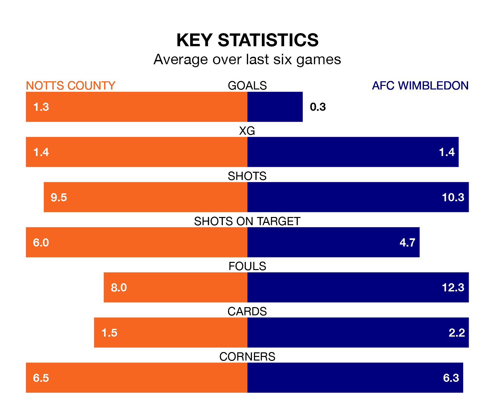

Notts County face a challenge to maintain their high-scoring form at home against a tight AFC Wimbledon defence on Saturday.
With 69 goals in 34 games, County are the joint-top scorers in EFL League Two ahead of the 3pm kick-off at Meadow Lane.
They face a Dons side who have scored 48 in 36 matches, but conceded only 39 goals, putting them joint-third among the league's tightest defences – only Mansfield Town and Stockport County have conceded fewer goals.
In Macaulay Langstaff, County have the league's sharpest shooter so far this season. He has notched 23 goals in 34 appearances.
His goal rate of one every 129 minutes is quicker than that of Ali Al-Hamadi, Wimbledon's top scorer with a goal every 152 minutes, and a total of 13 goals in 23 games.
The hosts are in bad form in EFL League Two, with one win and five losses from their last six games.
With a win and two draws over that period, the Dons' form is slightly better – they have taken five points from 18, compared to County's three.
The away side are 10th in the table after 36 games, of which they have won 13 and drawn 12, earning 51 points.
County are four places behind Wimbledon in 14th, with 14 wins and five draws putting them on 47 points.
County's last match was on February 27, a 4-3 loss against Sutton United, with Daniel Crowley (two) and Langstaff getting the goals for County.
Wimbledon drew 0-0 with Grimsby Town last time out, on Tuesday.
Saturday's match will be refereed by Simon Mather, who has taken charge of eight EFL League Two games so far this season, issuing two red cards and booking 40 players. He has awarded two penalties.
The last County game Mather refereed was a 1-0 away loss to Crewe Alexandra on November 11. He is yet to oversee a match featuring Wimbledon this season.
Updated: 09:34 (UTC), 08/03/24